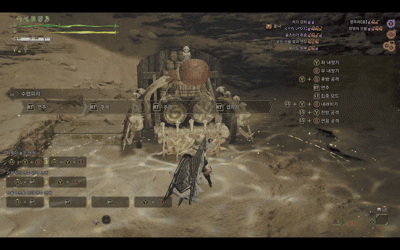

수렵피리는 음악을 연주해 버프를 걸 수 있는 독특한 무기이며,
타격 계열로 몬스터에게 직접 피해도 줄 수 있습니다.
과거에는 서포터 느낌이 강했지만 최근에는 공격 성능이 크게 향상되어
‘버프도 하고 딜도 넣는’ 다재다능한 무기로 평가받습니다.
연주를 통해 공격력 상승, 방어력 증가, 상태이상 내성 부여 등 아군 전체의 전투력을 끌어올릴 수 있어
멀티플레이에서도 활약도가 높습니다.

수렵피리
수렵피리 특성 요약
| 무기 | 상쇄 | 가드 | 전용자원 | 난이도 |
|---|---|---|---|---|
| 수렵피리 | ✅ | ❌ | ✅ | 3 |
| 버튼 역할 | 조작 | 설명 |
|---|---|---|
| 좌 내젓기 | Y |
음색1을 발생시키는 기본 공격입니다. LS + Y로 전방 공격도 가능합니다. |
| 우 내젓기 | B | 음색2를 발생시키는 기본 공격입니다. |
| 연음 공격 | LS + B |
음색2를 발생시키는 공격입니다. 공격 중 B 또는 Y 또는 B+Y로 추가 음색을 발생시킬 수 있습니다. |
| 후방 공격 | Y + B |
음색3을 발생시키는 기본 공격입니다. 뒤쪽 공격이 쉬우며, 공격하면서 뒤로 이동합니다. |
| 내려치기 | LS + Y + B |
음색3을 발생시키는 공격입니다. 공격 중 B 또는 Y 또는 B+Y로 추가 음색을 발생시킬 수 있습니다. |
| 자루 공격 | 콤보 중 LS 하 + Y 또는 B 또는 Y + B |
빠르게 음색을 발생시키는 공격입니다. Y, B, Y+B로 파생 가능하며, 각 조작에 따라 다른 음색이 발생합니다. |
| 연주 | RT |
선율 효과를 발생시키는 특수 공격입니다. 스톡된 선율이 여러 개일 경우에는 순서대로 연주하지만, RT + Y 또는 B로 처음 연주할 선율을 선택할 수도 있습니다. 여러 선율을 연주 중 RT로 강력한 주격으로 파생되며, 연주 후 Y + B로 겹치기를 사용하면 선율 효과의 시간 연장 및 강화가 가능합니다. 주격과 겹치기는 선율 효과 발동 타이밍에 맞추면 위력이 상승합니다. |
| 소리 구슬 | RT + (특수키) |
소리 구슬을 설치하는 특수한 기술입니다. 수렵피리에 설정된 종류의 소리 구슬을 설치할 수 있습니다. 소리 구슬 설치 중 B, Y, B+Y로 최대 3개의 음색을 발생시킬 수 있습니다. |
| 특수 연주 | 선율 스톡 시 RT + Y + B |
일반 연주와 달리 수렵피리에 설정된 개별 선율 효과를 발생시키는 선율입니다. 한 번 스톡하면 다른 선율로 덮어씌워지지 않고 계속 유지됩니다. |
| 집중 음격 [잔향] | LT 길게 누르기 + RB |
상처에 효과적인 연주 공격입니다. 연주 중 B, Y, B+Y로 최대 5개의 음색을 발생시킬 수 있습니다. 타이밍을 잘 맞춰 음색을 발생시키면 대미지가 상승합니다. |
소리 구슬
RT
+
A
음 쌓기
소리 구슬 생성 모션중 음의 키를 눌러 다른 모션 없이 음을 쌓는것이 가능합니다.
소리 구슬 범위 내에서 공격시 추가타가 발생합니다.
해당 기술을 통해 악보의 관리가 좀 더 편리하게 가능합니다.

향주파
무기마다 다르다
주력 딜링 악보
수렵피리의 주력 딜링 악보입니다.
주로 버프를 건 이후 해당 악보만을 반복해 중첩시켜 딜링합니다.